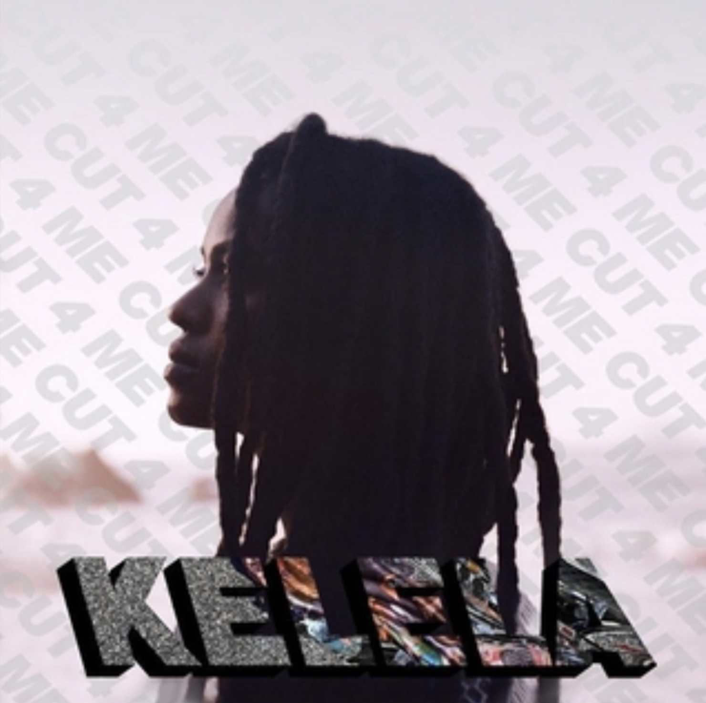

[CUT 4 ME - 2013]
- Guns & Synths
- Enemy
- Floorshow
- Do It Again
- Go All Night (Let Me Roll)
- Bank Head (Extended)
- Cut 4 Me
- Keep It Cool
- Send Me Out
- Go All Night (Let It Burn)
- Something Else
- A Lie
- Cherry Coffee

[HALLUCINOGEN - 2015]
- A Message
- Gomenasai
- Rewind
- All the Way Down
- Hallucinogen
- The High
[TAKE ME APART - 2017]
- Frontline
- Waitin
- Take Me Apart
- Enough
- Jupiter
- LMK
- Truth or Dare
- S.O.S.
- Blue Light
- Onanon
- Turn to Dust
- Bluff
- Altadena

[RAVEN - 2023]
- Washed Away
- Happy Ending
- Let it Go
- On the Run
- Missed Call
- Closure
- Contact
- Fooley
- Holier
- Raven
- Bruises
- Sorbet
- Divorce
- Enough for Love
- Far Away